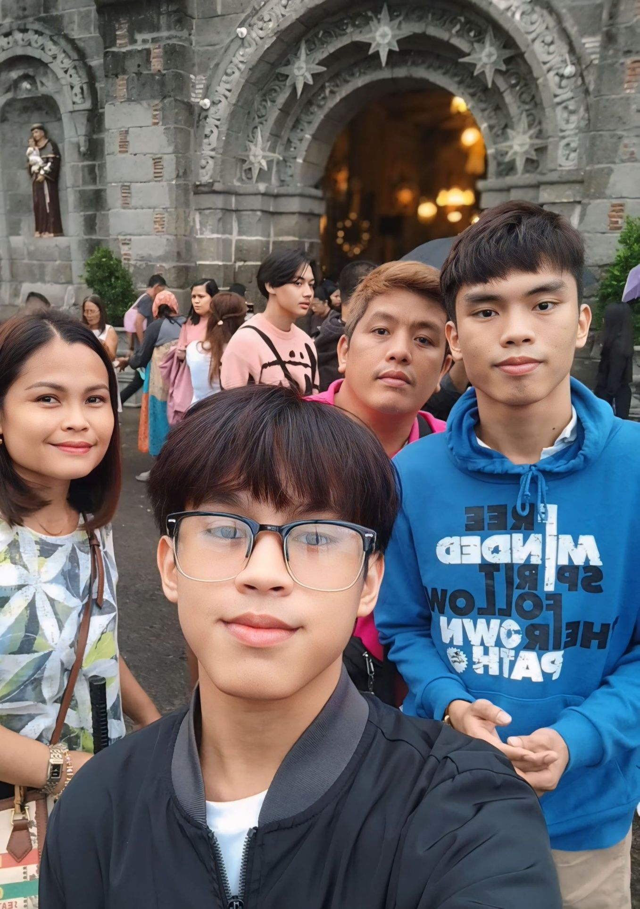

I’m a type of person who finds joy in the simple things in life whether it's enjoying a good meal, listening to music, or spending time doing activities I love. I consider myself a cheerful person, and I’m often observant, especially when something captures my interest.
I’m a passionate developer focused on building responsive web applications and user-friendly designs
I enjoy turning complex problems into simple, beautiful, and intuitive solutions.
Always exploring new tech and improving performance through design and clean code.
I like to observe the world around me sometimes it's the smallest detail, that sparks the biggest ideas.
I try to live life with that mindset focused, inspired, and always curious about what’s next.
I'm the type of person who believes that passion, consistency, and curiosity are the keys to becoming better day by day.

I’m someone who’s truly thankful for the life I’m living. I feel blessed to have a supportive and loving family they’re my biggest inspiration and the reason I keep pushing forward.
As the eldest in my family, I’ve naturally taken on a role of responsibility and guidance. It’s taught me a lot about patience, leadership, and looking out for the people I care about.
I take pride in doing my best, not just for myself, but also for the ones who look up to me.
I’ve had to balance schoolwork with my personal projects and deadlines, I’ve learned how to adjust work better with others, and keep things moving.
One challenge I often face is dealing with reality when things don’t go my way, but I remind myself that these experiences help me growing.
Adapting to new tools and technology in school, especially under pressure, isn’t always easy, still do my best to manage stress and think things through.
I’m someone who tries to manage stress as best as I can, even when life gets a little overwhelming, I feel frustrated with how things turn out, especially when I’ve put in a lot of effort.
Acquired Life Learnings
I believe that mistakes are just part of the process. Even when things go wrong, I don’t give up easily. I try to see errors as stepping stones
With everything going on—whether it’s schoolwork, personal projects, or group work I’ve learned that managing my time well really matters. It helps me stay organized and deliver on what’s expected.
I’m always trying to learn new things, whether it’s a new tool, skill, or just something interesting. It helps me stay ready for whatever challenges come my way and gives me more confidence in what I do.
I’ve come to realize that patience and time are two of the most important things in my life. I try not to rush things I believe that good things take time.
Future Plans in Life
Personal Goals
Improve work-life balance and maintain consistent self-care routines.
Explore new hobbies and expand creativity outside of academics.
Build stronger relationships through better communication and empathy.
Professional Goals
Gain deeper expertise in software development and emerging technologies.
Work on impactful projects that contribute to real-world solutions.
Continue formal education or certifications to advance my career.
Develop leadership and teamwork skills through collaboration.
Action Steps
Set clear and measurable milestones for each goal.
Engage with mentors and professional communities regularly.
Allocate time weekly for learning and personal development.
Stay adaptable and open to new opportunities and challenges.
Resume Page
My Whole Page Resume
Below is a full view of my resume, showcasing my education, experience, and skills.
Downloadable Curriculum Vitae
You can also download a copy of my CV for offline viewing or sharing.